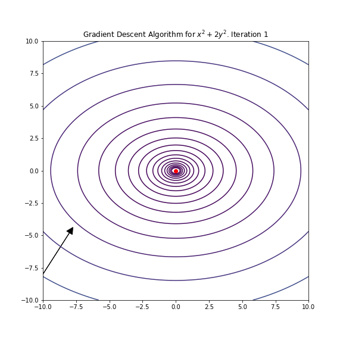

Introduction
In this blog post, I am going to present my recent work on the bias-corrected Monte Carlo operator, or more compactly “bc-MC operator”, which was recently published here in the JEDC. In this paper, I propose a new methodology to combine Monte Carlo and neural networks to solve large scale economic models. In this blog post, my goal is to give an intuitive description of this method.
Theory
Structure of economic models
In many cases, solving an economic model involves finding a policy function $g(.)$, which is a mapping from a state vector $s$ to a decision vector $a$. Usually, it is assumed that the economy is hit by random disturbances, which is usually modelled as zero-mean innovation vector $\varepsilon$, often considered to be normally distributed. The policy function $g(.)$ is such that the following stochastic equation holds:
$$ E_{\varepsilon}(f(s, \varepsilon)) = 0 $$
where $f(.)$ depends implicitly on the policy function $g(.)$ and on the particularities of the model under consideration. It looks a bit abstract, but we can usually write economic models in that form. For instance, in macroeconomic models, you usually have an Euler equation that can be written as such.
Here, let’s assume that we restrict ourselves to policy functions that depend on a parameter vector $\theta$: $g(. |\theta)$. Further, let’s assume that we use a multilayer perceptron for the policy function, so that the elements of $\theta$ are actually the weights and biases of that specific neural network. Now, the problem is in many ways much simpler, because it consists in finding a finite-size vector $\theta$, rather than finding a function, which is an infinite-dimensional object:
$$ E_{\varepsilon}(f(s, \varepsilon | \theta )) = 0 $$
We want the equation above to be true for all values of $s$. The common way to proceed is to define a grid for $s$ and to find $g(. |\theta)$ such that the previous equation holds on these grid points. For off-grid point values, interpolation schemes can be used. This is fine when $s$ is low-dimensional, but if $s$ is high-dimensional, the curse of dimensionality is going to bite: the number of grid points grows exponentially with the dimension of $s$, not linearly. The trick here is treat $s$ as a random variable, living within an ergodic set $S$ and to solve the following problem:
$$ E_{s} \Big( \Big[ E_{\varepsilon}(f(s, \varepsilon | \theta )) \Big]^2 \Big) = 0 $$
This probabilistic formulation works well even if $s$ is high-dimensional, because we have numerical methods that can handle high-dimensional expectations. In particular, we have Monte Carlo integration, which consists in approximating expectations using sample means.
Now define $L(\theta)$ as the left-hand side of the previous equation:
$$ L(\theta) = E_{s} \Big( \Big[ E_{\varepsilon}(f(s, \varepsilon | \theta )) \Big]^2 \Big) $$
One way to find $\theta$ is to use the gradient descent algorithm, which is an iterative method. We start with a random guess for $\theta$, denoted $\theta_{i}$, and we update the guess using the information contained in the gradient of $L$ evaluated at $\theta_i$ denoted by $\nabla_{\theta} L(\theta_i)$, which is the direction of the steepest ascent. Because we are minimizing a function, we take a small step $\gamma$ in the opposite direction of the gradient:
$$ \theta_{i+1} = \theta_{i} - \gamma \nabla_{\theta} L(\theta_{i}) $$
Below is an example of gradient descent for the function $x^2 + 2 y^2$. As expected, we iteratively converge to the minimum of this simple function, at $(0,0)$.
# Illustration of gradient descent using Python
import numpy as np
import matplotlib.pyplot as plt
from matplotlib.animation import FuncAnimation
from IPython.display import Image
# Define the function and its gradient
def f(x, y, a=1, b=2):
return a*x**2 + b*y**2
def grad_f(x, y, a=1, b=2):
return a*2*x, b*2*y
# Parameters
alpha = 0.1 # Learning rate
n_iterations = 25 #Number of steps
# Initial point
x, y = -10, -8
trajectory = []
# Gradient Descent Algorithm
for _ in range(n_iterations):
trajectory.append((x, y))
dx, dy = grad_f(x, y)
x -= alpha * dx
y -= alpha * dy
# Setting up the visualization
x_vals = np.linspace(-10, 10, 400)
y_vals = np.linspace(-10, 10, 400)
X, Y = np.meshgrid(x_vals, y_vals)
Z = f(X, Y)
fig, ax = plt.subplots(figsize=(8, 8))
CS = ax.contour(X, Y, Z, levels=np.logspace(-1, 3, 20), cmap='viridis')
ax.plot(0, 0, 'ro') # Mark the minimum
# Animation function
def update(frame):
ax.cla()
ax.contour(X, Y, Z, levels=np.logspace(-1, 3, 20), cmap='viridis')
ax.plot(0, 0, 'ro') # Minimum
# Current point and arrow
x, y = trajectory[frame]
dx, dy = grad_f(x, y)
# Direction of update
ax.arrow(x, y, -alpha * dx, -alpha * dy, head_width=0.5, head_length=0.5, fc='k', ec='k')
ax.set_xlim([-10, 10])
ax.set_ylim([-10, 10])
ax.set_title(f"Gradient Descent Algorithm for $x^2 + 2y^2$. Iteration {frame + 1}")
ani = FuncAnimation(fig, update, frames=n_iterations, repeat=False)
ani.save('gradient_descent.gif', writer='imagemagick', fps=1)
plt.close()
Image(url='gradient_descent.gif')

The bc-MC operator
As it is now clear from the previous visual illustration, knowledge of the gradient of the loss function is enough to find numerically a solution of our economic model, at least a local one (for the gradient descent algorithm to converge to a global minimum, we usually need the function to be convex over its domain).
One difficulty here is that we cannot compute the expectations appearing in $L(\theta) = E_{s} \Big( \Big[ E_{\varepsilon}(f(s, \varepsilon | \theta )) \Big]^2 \Big)$. However, as suggested before, we can use Monte Carlo integration, which consists in using sample means to approximate expectations:
$$ L^{B}_{M,N}(\theta) = \frac{1}{M} \sum_{m=1}^{M}\Big[ \frac{1}{N} \sum_{n=1}^{N} f(s_m, \varepsilon_n | \theta ) \Big]^2 $$
Clearly, this is an estimator of $L(\theta)$ that makes a lot of sense. However, because of some unpleasant arithmetic regarding the estimation the square of the mean, this is a biased one.
Start with the formula for the variance $Var(X) = E(X^2) - E(X)^2 \Leftrightarrow E(X^2) = E(X)^2 + Var(X)$. Using this formula
$$ E_{\varepsilon}\Big[ \Big(\frac{1}{N} \sum_{n=1}^{N} f(s_m, \varepsilon_n | \theta ) \Big)^2 \Big] = \Big( E_{\varepsilon}\Big[ \frac{1}{N} \sum_{n=1}^{N} f(s_m, \varepsilon_n | \theta ) \Big] \Big)^2 + Var_{\varepsilon} \Big( \frac{1}{N} \sum_{n=1}^{N} f(s_m, \varepsilon_n | \theta ) \Big) $$
Using the linearity of the expectation operator, and the fact that $Var(a X) = a^2 V(X)$, one gets:
$$ E_{\varepsilon}\Big[ \Big(\frac{1}{N} \sum_{n=1}^{N} f(s_m, \varepsilon_n | \theta ) \Big)^2 \Big] = \mu_{s_m}^2 + \frac{\sigma_{s_m}^2}{N} $$
In words, one gets the square of the mean, plus a bias term equal to the variance of $f$ (conditional on $s = s_m$) divided by $N$. Fortunately for us, there exists an unbiased estimator of the variance, given by the sample variance. An easy way to neutralize the bias is to subtract the sample variance (divided by N):
$$ L^{U}_{M,N}(\theta) = \frac{1}{M} \sum_{m=1}^{M }\Big( \Big[ \frac{1}{N} \sum_{n=1}^{N} f(s_m, \varepsilon_n | \theta ) \Big]^2 - \frac{S_m^2}{N} \Big) $$
The term “bc-MC operator” comes from bias correction.
The previous expression can be rewritten as:
$$ L^{U}_{M,N}(\theta) = \frac{2}{MN(N-1)} \sum_{m=1}^{M} \sum_{1 \leq i < j}^{N} f(s_m, \varepsilon^{i}_m | \theta ) f(s_m, \varepsilon^{j}_m | \theta ) $$
where $\varepsilon^{i}$ and $\varepsilon^{j}$ are i.i.d. shocks with the same distribution as $\varepsilon$. This expression is more convenient because it can be written as a sparse matrix multiplication:
$$ L^{U}_{M,N}(\theta) = \frac{2}{MN(N-1)} f’ \Lambda f $$
where $\Lambda$ is a sparse matrix. More specifically
- $f$ is MN column vector such that $f’ = (f(s_1, \varepsilon^{1}_1), …, f(s_1, \varepsilon^{N}_1), f(s_2, \varepsilon^{1}_2), …, f(s_2, \varepsilon^{N}_2), …, f(s_M, \varepsilon^{N}_M))$
- $\Lambda = I_{M} \otimes U_{N}$ is $MN \times MN$ sparse matrix, with $ I_{M}$ the $M \times M$ identity matrix and $U_{N}$ a $N \times N$ upper triangular matrix whose diagonal elements are equal to zero, while the entries above the main diagonal are all equal to one. The symbol $\otimes$ denotes the Kronecker product.
This expression can be very efficiently calculated using Python and Pytorch, with no loops involved.
Minimum Variance Unbiased Estimator
Actually, under certain conditions on the economic model under consideration, I show that $L^{U}_{M,N}(\theta)$ it the Minimum Variance Unbiased Estimator (MVUE) of the loss function $L(\theta)$. That is, if one is willing to only consider unbiased estimators of $L(\theta)$, then $L^{U}_{M,N}(\theta)$ is the one with the lowest variance. In the paper, I use the Lehmann-Scheffé theorem. This theorem states that any estimator that is unbiased for a given unknown quantity and that depends on the data only through a complete, sufficient statistic is the unique best unbiased estimator of that quantity.
But there is another simpler proof, if one is willing to only consider estimators that linearly combine estimators of the square of means (conditional on $s=s_m$), denoted by $E_m$
$$ L_{a} = \sum_{m=1}^{M} a_m E_m $$
It is easy to show that for $L_{a}$ to be the MVUE of $L(\theta)$, its must be a linear combination of MVUEs for the square of means, denoted by $\tilde{E}_m$
$$ L_{a} = \sum_{m=1}^{M} a_m \tilde{E}_m $$
The proof relies on the following lemma: “An unbiased estimator $T(X)$ of $h(\theta)$ is UMVUE iff $T(X)$ is uncorrelated with all unbiased estimators of 0”.
It is clear here that taking unbiased estimators for $E_m$ will result in $L_{a}$ being unbiased as well, by linearity of the expectation operator. Then, we can consider an unbiased estimator of $0$, denoted by $U$:
$$ Cov(\sum_{m=1}^{M} a_m \tilde{E}_m, U) = \sum_{m=1}^{M} a_m cov(\tilde{E}_m, U) = 0 $$
where $cov(\tilde{E}_m, U) = 0$, because each $\tilde{E}_m$ is itself a MVUE by assumption. We still have to determine the optimal values for the $a_m$, under the constraint that they all sum up to one. Now, as long as the estimators $\tilde{E}_m$ have equal variance, the optimal way to select the coefficient $a_m$ is to use equal weighting: $a_m = \frac{1}{M}$ (otherwise, one may use inverse-variance weighting, as we do with weighted least squares):
$$ L_{a} = \frac{1}{M} \sum_{m=1}^{M} \tilde{E}_m $$
For an i.i.d sample normally distributed with finite variance, the MVUE of the square of the mean is the square of the empirical mean, minus the sample variance divided by the sample size. Said differently, we are back to the expression for the bc-MC operator, exactly as before:
$$ L_{a} = \frac{1}{M} \sum_{m=1}^{M }\Big( \Big[ \frac{1}{N} \sum_{n=1}^{N} f(s_m, \varepsilon_n | \theta ) \Big]^2 - \frac{S_m^2}{N} \Big) $$
Choice of the hyperparameters $M$ and $N$
One question that remains open is the optimal choice of the hyperparameters $M$ and $N$. In an ideal world in which computations are costless, we would like to take $M$ and $N$ to infinity. But in practice, the bc-MC estimator involves evaluating $f(s_m, \varepsilon_n)$ MN times, before combining these values using the formula $\frac{2}{MN(N-1)} f’ \Lambda f $. A natural starting point for a “computational budget” consists in considering a multiple of $MN$, even if more sophisticated techniques could be used.
If you do that, you will find the variance of the loss (for a given $\theta$) can be written as $\frac{1}{MN} \times h(M, N, \theta) $, where $h(M, N, \theta)$ can be estimated using simulated data from the model (propositions 4-6 in the paper). Said differently, for a given “computational budget”, we can find the best combination of $M$ and $N$ such that $h(M, N, \theta)$ is minimized. We can train the neural network (update the value for $\theta$), while simultaneously changing the values for $M$ and $N$.
Note that if $N=2$ all the time, then we have
$$ L^{U}_{M,N}(\theta) = \frac{1}{M} \sum_{m=1}^{M} f(s_m, \varepsilon^{1}_m | \theta ) f(s_m, \varepsilon^{2}_m | \theta ) $$
which is an estimator that was already suggested in this paper.
Review of applications
In the paper, I start with the really simple Brock-Mirman Stochastic Growth Model from 1972. For this model, we get a closed-form solution for the policy function and we can very sharply characterize the best choice for the hyperparameters $M$ and $N$. So it is good warm-up.
A more interesting application is consumption-savings model with a borrowing constraint.
But you can also apply this methodology to OLG models with a large number of different age groups.
Probably the next step would be to use the methodology for a Krusell-Smith model.
References
- Julien Pascal, Artificial neural networks to solve dynamic programming problems: A bias-corrected Monte Carlo operator, Journal of Economic Dynamics and Control, Volume 162, 2024, 104853, ISSN 0165-1889, https://doi.org/10.1016/j.jedc.2024.104853. (https://www.sciencedirect.com/science/article/pii/S0165188924000459)
To cite this work:
@article{PASCAL2024104853,
title = {Artificial neural networks to solve dynamic programming problems: A bias-corrected Monte Carlo operator},
journal = {Journal of Economic Dynamics and Control},
volume = {162},
pages = {104853},
year = {2024},
issn = {0165-1889},
doi = {https://doi.org/10.1016/j.jedc.2024.104853},
url = {https://www.sciencedirect.com/science/article/pii/S0165188924000459},
author = {Julien Pascal}
}